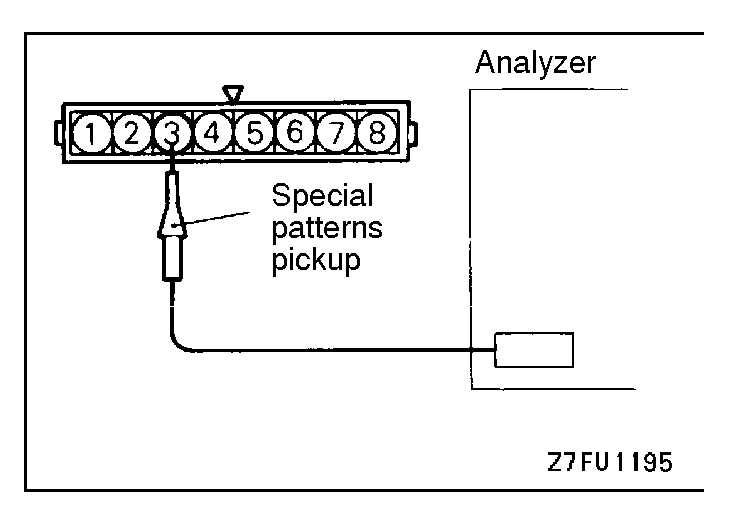
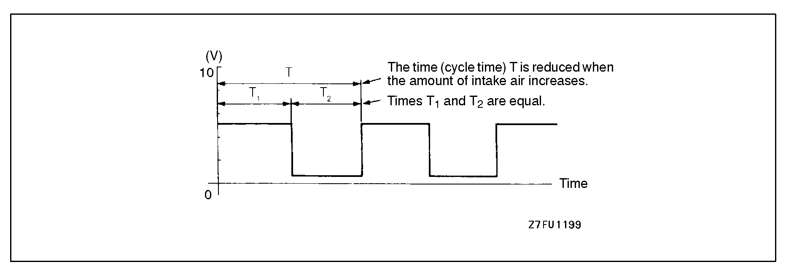
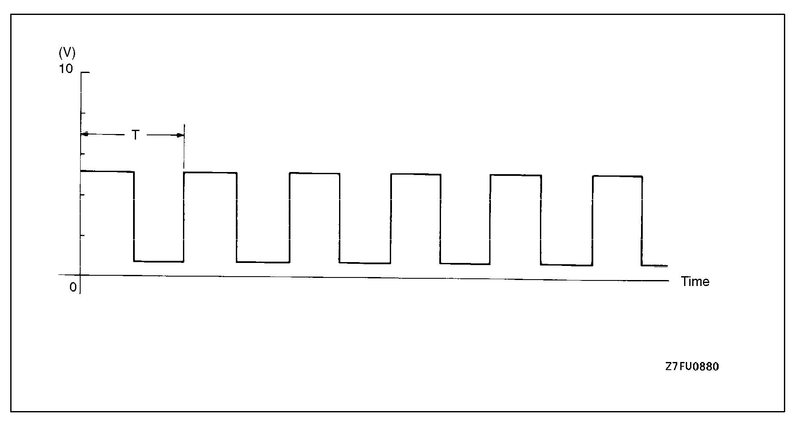
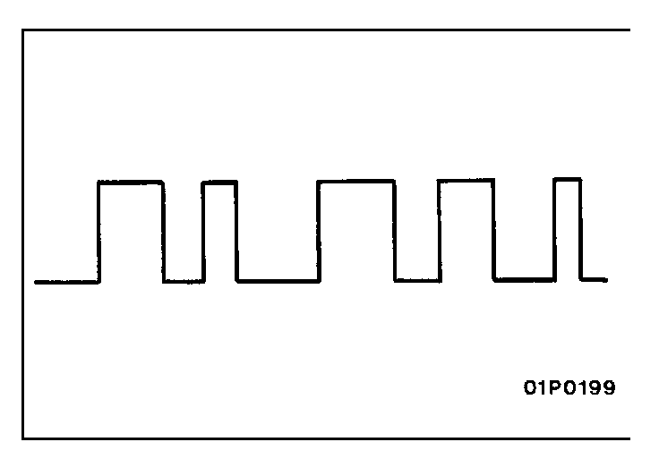

![[Previous]](https://mitsubishitechinfo.com/data/F24S/BUTTONS/fprevg.png)
![[Next]](../../../BUTTONS/fnext.png)
  
INSPECTION PROCEDURE USING AN ANALYZER
VOLUME AIR FLOW SENSOR
Measurement method
1.Disconnect the volume air flow sensor connector, and connect the special tool (test harness: MB991348) in between. (All terminals should be connected.)
2.Connect the analyzer special patterns pickup to volume air flow sensor connector terminal 3.
Alternate method (Test harness not available)
1.Connect the analyzer special patterns pickup to ECM terminal 90.
Standard Wave Pattern
Observation conditions
Function
Special patterns
Pattern height
Low
Pattern selector
Display
Engine r/min
Idle
Standard wave pattern
Observation conditions (pattern changes with engine speed changes.)
Wave pattern observation points
Check to be sure that cycle time T becomes shorter and the frequency increases when the engine speed is increased.
|
 |
Examples of abnormal wave patterns •Example 1 Cause of problem Sensor interface malfunction Wave pattern characteristics Rectangular wave pattern is output even when the engine is not started. •Example 2 Cause of problem Damaged rectifier or vortex generation column Wave pattern characteristics Unstable wave pattern with non-uniform frequency. However, when an ignition leak occurs during acceleration, the wave pattern will be distorted temporarily, even if the volume air flow sensor is normal. |
||||||||||||||||||||||||||||||||||||||||||||||||||||||||||||||||||||||||||||||